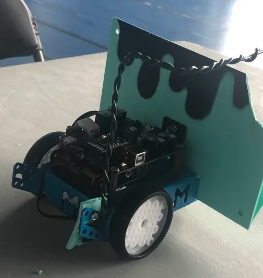
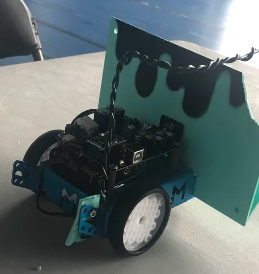

Mes Expériences
Stage - Entreprise Mentalworks
Stage 3ème / 2025
- Observation du travail des développeurs et des graphistes.
- Compréhension de l'importance des compétences nécessaires pour participer aux tâches techniques.
- Réalisation d'une mission de vérification orientée vers des activités bureautiques.
- Apprentissage des méthodes de travail en équipe et des bonnes pratiques bureautiques.

Concours - DEFI ROBOT ACADEMIQUE COLLEGE
2024 - 2025
Au départ, nous étions un groupe assez nombreux à participer au Défi Robot Académique Collège. L’objectif était de créer un robot capable de suivre un parcours précis et de réaliser différentes missions, tout en appliquant nos connaissances en technologie, codage, logique et travail d’équipe. L’ambiance était motivante et chacun avait envie de contribuer au projet.
Avec le temps, certains membres ont commencé à douter de nos compétences et ont décidé de se retirer, pensant que ce serait trop difficile ou qu’ils n’arriveraient pas à atteindre la finale. Finalement, il ne restait plus que trois d’entre nous, mais nous étions déterminés à aller jusqu’au bout.
Nous avons alors organisé notre travail de manière logique :
- Planification : identification des tâches, répartition des rôles et suivi dans un fichier Excel.
- Programmation et montage du robot : codage des mouvements, tests des capteurs, ajustement des moteurs et vérification des missions.
- Préparation du dossier numérique : présentation de notre démarche, analyse du problème et mise en œuvre de solutions techniques.
- Révision de la présentation orale : répétition du discours et préparation des réponses aux questions des examinateurs, y compris une partie en anglais.
Nous avons également dû faire face à des délais de livraison particulièrement longs pour recevoir une partie essentielle du matériel, ce qui a considérablement freiné l’avancement du projet, retardé certaines phases de tests et nécessité une réorganisation complète de notre planning afin de pouvoir continuer à progresser malgré ces contraintes.
La soutenance orale, appelée Préao, était un moment clé. Nous disposions de dix minutes pour présenter notre projet devant les examinateurs, en expliquant la conception du robot, les solutions techniques que nous avions choisies et les tests réalisés. Une partie de la présentation devait être faite en anglais, ce qui nous a permis de montrer notre capacité à communiquer dans une autre langue et à valoriser certains aspects du projet devant le jury.
Malgré la pression, nous avons réussi à présenter notre projet de manière claire et structurée. Notre persévérance a payé : nous avons été qualifiés pour la finale départementale !
Participer à cette aventure m’a appris l’importance de la persévérance, de la confiance en soi et en son équipe, ainsi que de la planification et de l’organisation logique dans un projet technique.

 
